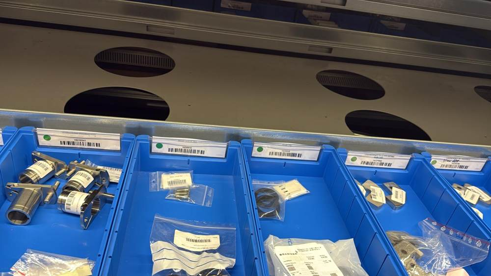
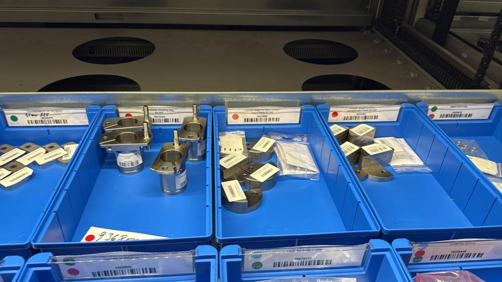
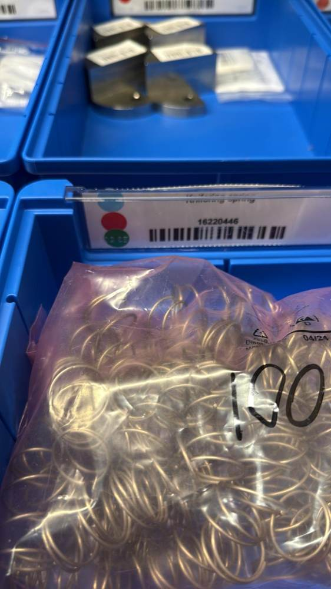

Visual Parts Identification System
A warehouse visual-management standard that makes spare-part compatibility immediately visible through color points — reducing dependence on individual memory and making shared and legacy-machine parts easier to identify.

Part compatibility was not visible at the point of picking
A spare-parts warehouse can contain visually similar components used across several machine types and generations. Without an immediate compatibility cue, picking relies on documentation, part-number knowledge or individual experience. The goal was to make the first level of compatibility visible directly on the storage location.
Reduce time spent determining which machine a part belongs to.
Add a simple visual poka-yoke against selecting a part for the wrong machine family.
Make the system understandable to new staff without years of product memory.
Show when one component is shared across multiple machine types or generations.
Designed and introduced the visual standard
I developed the color-point logic and introduced it into the spare-parts storage system. Each machine type receives a dedicated color. The point is placed directly on the bin identification label so compatibility can be read before the part is picked. Multiple points indicate cross-machine use, while a silver point identifies compatibility with an older / legacy machine generation.
Identification logic
Defined a simple visual rule set that converts machine compatibility into a visible warehouse signal.
Shared-part logic
Parts used across several machine types receive multiple color points rather than duplicated or ambiguous classification.
Legacy-machine indication
Added a silver identifier to distinguish components that also apply to an older machine generation.
Point-of-use implementation
Placed the compatibility indication at the bin label itself, so the information is visible exactly where picking happens.
One rule set, multiple compatibility states
The component is assigned to one machine type.
The same component is used on more than one machine type.
The component is compatible with a current machine type and a legacy generation.
Multiple points make broader commonality immediately visible.
Real warehouse application




From part data to faster identification
Determine which machine type or generation uses the component.
Apply the corresponding visual color identifier.
Add multiple colors when one part is shared across platforms.
Add the silver identifier where older-machine compatibility applies.
Compatibility is visible at the storage location before the component leaves the bin.
A small visual change with system-level value
This project is an example of practical process engineering: the solution does not require software, scanners or complex automation to create value. By placing standardized compatibility information at the point of use, the system supports faster picking, fewer avoidable errors, easier onboarding and clearer understanding of part commonality across the installed machine base.
Relevant wherever parts complexity grows
The same visual-management logic can support service warehouses, production stores and maintenance organizations in marine, medical, pharma and industrial equipment environments — especially where multiple product generations share components and picking accuracy matters.